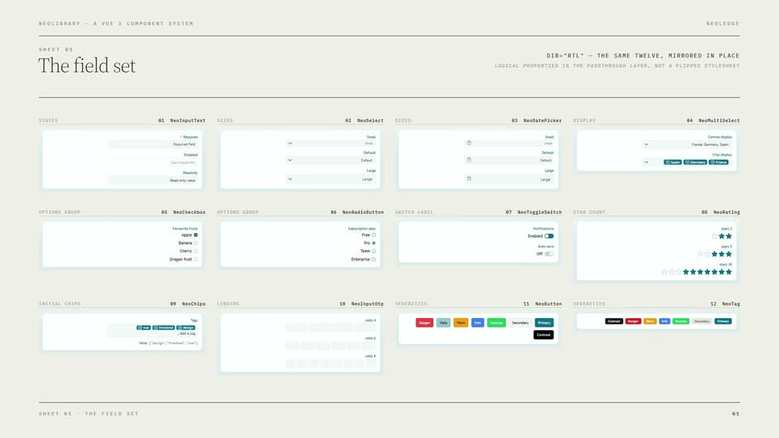
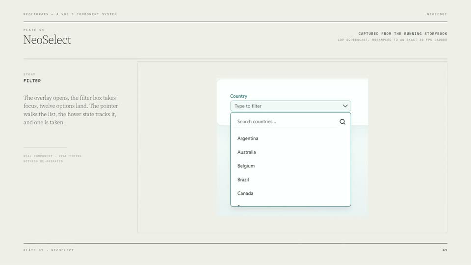
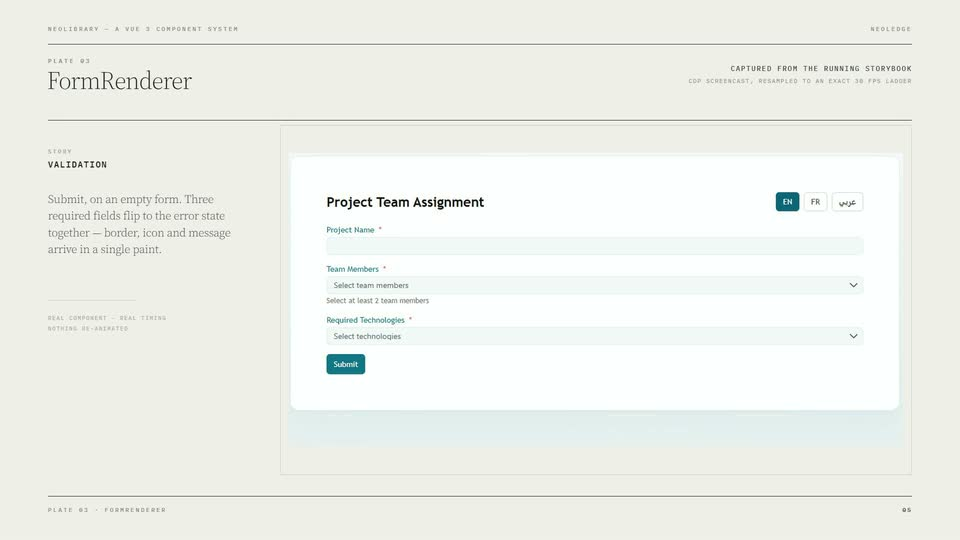

NeoLibrary
One tested source of truth for every NeoLedge product's fields: 37 Vue 3 components whose state classes are pure functions, asserted with nothing mounted.
Overview
Every product team at NeoLedge restyled PrimeVue independently, so brand-critical field states drifted. NeoLibrary makes that one tested source of truth: 37 Vue 3 components - the 25 that wrap PrimeVue 4 render it unstyled under 27 per-component passthrough configs, where every state-dependent DOM node's classes are computed as pure functions of props and context — an 8-state field spec, seven of them resolved by a six-branch priority chain (disabled > readonly > invalid > warning > focused > default), asserted in unit tests with nothing mounted, including a test that forbids physical padding so RTL stays correct. It also ships NeoBlockly, a visual rule editor with 187 registered block types that compiles a workspace into async JavaScript.
Problem and objectives
Every product team at NeoLedge restyled PrimeVue independently, so brand-critical field states drifted from one product to the next.
- One component library every product consumes
- Field states defined once and tested without rendering
- Right-to-left layouts that stay correct as components change
Architecture
Products
NeoLedge front ends
The applications that consume the library, NeoForm among them.
- Products NeoLedge front ends — The applications that consume the library, NeoForm among them.
- NeoLibrary Vue 3 · TypeScript — 37 components with one 8-state field specification.
- Passthrough 27 configs · Tailwind — Classes computed as pure functions of props and context.
- PrimeVue 4 unstyled mode — Behaviour and accessibility from PrimeVue; every pixel from the passthrough.
- NeoBlockly 187 block types — A visual rule editor that compiles a workspace into async JavaScript.
- Tests Vitest · Storybook · vue-tsc — 585 tests, 207 stories, a strict type gate in CI; RTL enforced at class level.
Engineering challenges and decisions
- 27 Tailwind passthrough configs over PrimeVue 4 unstyled, 8-state spec, 6-branch chain
- NeoBlockly: 187 block types compiled to async JS, 7 declared toolbox profiles, 6 distinct toolboxes today
- 585 tests across 58 files, 207 Storybook stories, vue-tsc strict gate in CI
- RTL direction resolved through 5 ordered sources, enforced by class-level tests
Nothing mounted
- The constraint
- 37 components, an 8-state field spec, seven of those states resolved by a six-branch priority chain — disabled > readonly > invalid > warning > focused > default.
- What I rejected
- Rendering components to assert it.
- What I did
- Passthrough classes computed as pure functions of props and context, asserted in unit tests with nothing mounted, including a test that forbids physical padding so RTL stays correct.
- What it cost
- The tests assert classes, not pixels.
Technologies
My contribution
Owner and lead developer — architecture, the 37 components, the passthrough design system and the Blockly editor.
Screens
Stills from the demo film.



Results
- 37
- components; 25 wrap PrimeVue 4 unstyled
- 585
- tests across 58 files
- 207
- Storybook stories
- 187
- NeoBlockly block types, compiled to async JavaScript